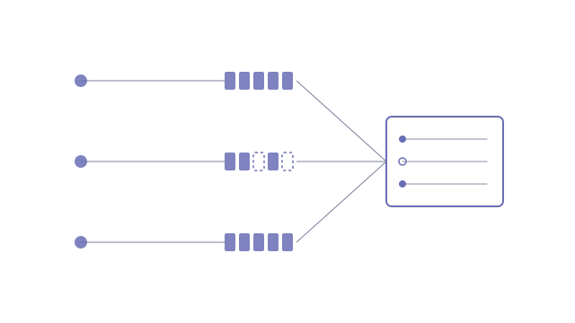

ISO/IEC 42001 expects an organisation to know which AI systems it runs, what they do, what data they touch, how risky they are and who answers for them. Teams that build agents quickly rarely keep that inventory up to date. A spreadsheet written after the fact is out of date the day it is finished, and a register that guesses its own answers is worse than one with honest blanks.
- A register round in the planning interview every new project goes through: risk classification, models used, data processed, personal data, human oversight, runtime, owner and teams impacted
- Answers go verbatim into the spec, then into machine-readable frontmatter in each project's own status file when the repo is scaffolded
- A portfolio dashboard reads that frontmatter across every repo and renders the inventory
- Only declared facts count. Risk class and owner are never inferred, and an undeclared field is shown as a named gap on that system
- The dashboard proposes values it can derive, but a human commits them, and it never writes to a project repository
New projects are born register-complete because the questions are asked while the answers are fresh, and existing projects show exactly which fields are still missing. The register lives next to the code it describes, so it changes in the same commit as the system.
- Agent skill · planning interview and templates
- YAML frontmatter in each repo's status file
- Next.js portfolio dashboard · read-only GitHub access
- ISO/IEC 42001 inventory fields
Ask at planning, not at audit
Almost every register field is something the team already knows on the day it designs a system: which models it will call, whether it touches personal data, where a human stays in the loop. Six months later that knowledge is spread across a codebase and a few memories. So the register questions sit in the planning interview itself, and most answers are confirmed from what has already been discussed rather than asked cold.
Owner and teams impacted were added after the first round of use, because they turned out to be the questions an auditor asks first and the ones nobody had written down. Teams impacted is deliberately different from the interview's user persona: it names the real teams whose work changes, which is the thing a governance review actually needs.
A blank is an answer, a guess is not
The tempting version of this dashboard fills in what it can: a risk class from keywords, an owner from the commit history. That produces a register that looks complete and cannot be trusted. Here the rule runs the other way. Risk classification is a human judgement, and an explicit "no personal data" or an empty models list counts as recorded, while a missing field is a gap listed by name against that system.
Where the dashboard can derive something useful, it proposes it as unconfirmed and hands back a block to paste into the repo. It never commits for you. That keeps each project's own status file as the single source of truth, so the inventory can't drift from the systems it describes, and it makes completeness something you can see rather than something you hope for.